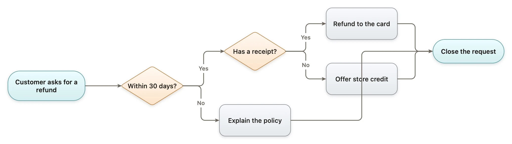
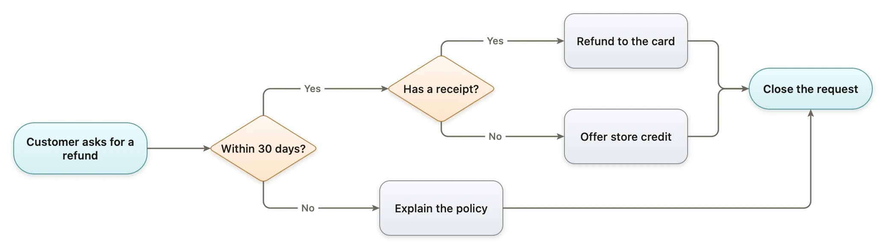
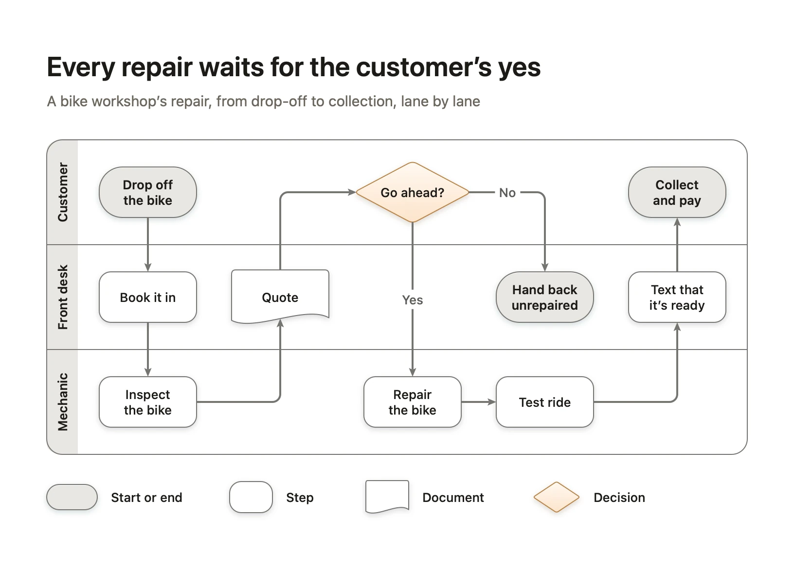

How to draw a clear flowchart
PUBLISHED 2026-11-06
A flowchart is a promise that someone can follow a process with their finger: start here, do this, decide that, end there. Most flowcharts that fail don’t fail because the process is complicated. They fail because the reader can’t tell where to look next, what a shape means, or which way a decision goes.
This article is a method for flowcharts that people can follow the first time. It works on paper, on a whiteboard or in any diagramming app. The last part shows where Diagrove does some of it for you.
Start with one question
Before you draw anything, write down the one question the flowchart answers, as its title: “How is a refund decided?”, “What happens to a bike between drop-off and collection?”. A flowchart that tries to answer two questions draws both badly.
The question also tells you where it starts and ends. A refund flowchart starts when a customer asks and ends when the request is closed, not when the money arrives two weeks later. If you find yourself adding steps outside those two points, they belong in another flowchart, linked from this one.
Use four shapes, and say what they mean
The standard flowchart shapes are older than most of the software that draws them, and readers know them without a key:
- Start or end: a rounded box, a terminal. One where the process begins, one or more where it ends.
- Step: a rectangle. Something a person or a system does.
- Decision: a diamond. A question with a small number of answers, usually yes or no.
- Document: a box with a wavy bottom. Something written down or handed over, such as a quote or a receipt.
That’s enough for almost every business process. Add a key in a corner anyway: it costs nothing, and it settles arguments about what a shape meant. If you need more than these four, the process is probably two flowcharts, or a different kind of diagram: a sequence diagram for messages between systems, a state machine for something that changes state.
Write steps as verbs, and decisions as questions
Each step is an action, in a few words, starting with a verb: “Book it in”, “Inspect the bike”, “Refund to the card”. Not “Booking”, not “Inspection phase”. A reader should be able to say each box aloud as an instruction.
Each decision is a question that ends in a question mark and has answers you can write on its arrows: “Within 30 days?”, “Go ahead?”. If the honest answer is “it depends”, the question is too big. Split it into the questions it depends on.
Label every exit of a decision
A diamond with two unlabelled arrows is a coin toss. Write the answer on every arrow that leaves a decision, and leave each answer from its own side of the diamond: yes one way, no the other. Then a reader can follow one answer through the whole chart without reading the others.
Keep the main path, the one most cases take, in a straight line. The exceptions branch off it. When the main path zigzags, a reader can’t tell it from the exceptions.
Keep one direction, and stop lines from crossing
Choose one direction, top to bottom or left to right, and keep to it. Arrows that run backwards are fine for a loop, such as “Fix the claim” going back to “Submit the claim”, but every other arrow should point onwards.
Then look for lines that cross each other or run behind a box. Each one is a place where a reader’s finger slips. The usual fixes are small: move a box, leave a decision from a different side, or route the line around with right angles. In the refund flowchart below, the “Explain the policy” line runs straight through “Offer store credit”, and the two answers of each decision leave it along the same path before they part.

The same flowchart with each answer leaving its decision from its own side, and the policy line meeting “Close the request” from below. Nothing moved but the ends of five lines.

Use swimlanes when more than one person is involved
When a process passes between people or teams, the handoffs are where it goes wrong, and a plain flowchart hides them. Swimlanes make them visible: one lane per person or team, each step in the lane of whoever does it. Every arrow that crosses a lane is a handoff, and every handoff is worth asking about: who is waiting, and how do they know it’s their turn?
Name the lanes after roles, not people (“Front desk”, not “Sam”), so the chart survives a change of staff.
Keep it to one page
If a flowchart needs more than about fifteen steps, readers stop following it. Look for a part that can become a single step, such as “Check the receipt”, with its own flowchart on its own page. A chart that fits on a screen gets read; one that needs scrolling gets skimmed.
Test it with a real case
The last check is the most useful. Take one real case, such as last Tuesday’s refund, and walk it through the chart with your finger, out loud. Every place you hesitate is a missing step, a vague question or an unlabelled arrow. Then ask someone who does the work to do the same.
How Diagrove helps
Diagrove is a diagramming app for Mac and iPad. A few of the steps above are things it does for you, or checks.
Start from the swimlane template. The Flowchart template is a bike workshop’s repair across three swimlanes, Customer, Front desk and Mechanic, with the four shapes, a “Go ahead?” decision with both exits labelled, and a key. Choose File › New from template… (Shift-Command-N) on the Mac, or Choose a template on iPad, and replace the steps with yours.

Type the steps instead of drawing them. In the prompt bar at the bottom of the canvas, write Cart -> Pay -> Paid? -> Send receipt and Diagrove draws a box for each step, joins them with arrows and lays them out. A step that ends with a question mark becomes a decision, and Paid? -[yes]-> Send receipt labels the arrow. This works with or without Apple Intelligence. See the prompt bar.
Lines stay attached. A line drawn from one shape to another attaches to their magnets and follows when you move a shape, so moving a box to stop a crossing doesn’t break the chart. Arrange › Auto-arrange lays connected shapes out as a flow, top to bottom (Shift-Command-L) or left to right, and one undo puts them back. See outline and auto-layout.
Check it before you share it. The diagrove command-line tool for the Mac reads a document and lists what makes it hard to read: overlaps, words that don’t fit their box, weak contrast, and lines that run through shapes they don’t connect. For the first refund flowchart above it reported three problems: the line from “Explain the policy” runs through “Offer store credit”, which it doesn’t connect, and at each decision the Yes and No lines run along the same path, “so a reader can’t tell which goes where”, with the fix for each. The second one passed with none.
diagrove check Refund.diagroveThe two refund flowcharts are written in Diagrove text, a few lines of plain text the tool turns into a document. The tidy one differs from the first only in which side of each shape its lines use, such as in_time.top -> receipt.left: "Yes". See the command-line tool.
Start with your next process
Pick one process you explain more than once a month, write its question as a title, and draw it with the four shapes. Walk one real case through it before you send it.
- See the Flowchart template, and the other process templates: a customer journey, a process map, a decision tree and an approval flow.
- Follow the tutorial Your first flowchart, from a blank canvas to a finished chart.